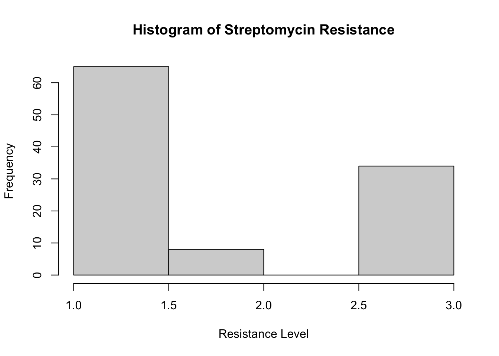

Quarto enables you to weave together content and executable code into a finished document. To learn more about Quarto see https://quarto.org.
Running Code
When you click the Render button a document will be generated that includes both content and the output of embedded code. You can embed code like this:
#Create a {gtsummary} table of descriptive statistics about your data (1 pt)#| label: tbl-sum_stats#| tbl-cap: "This is a summary table."tbl_summary( modified_data,by = gender,include =c(gender, arm, dose_strep_g, baseline_cavitation, improved, baseline_condition, strep_resistance, rad_num),label =list( arm ~"Treatment", dose_strep_g ~"Dose of Streptomycin (in grams)", baseline_condition ~"Condition at Baseline", strep_resistance ~"Resistance to Streptomycin at 6 months", baseline_cavitation ~"Cavitation of Lungs at Baseline", improved ~"Improved Outcome", rad_num ~"Rating of Chest X-Ray at 6 months" ))
Characteristic
Male, N = 59
1
Female, N = 48
1
Treatment
Control
28 (47%)
24 (50%)
Streptomycin
31 (53%)
24 (50%)
Dose of Streptomycin (in grams)
0
28 (47%)
24 (50%)
2
31 (53%)
24 (50%)
Cavitation of Lungs at Baseline
24 (41%)
21 (44%)
Improved Outcome
28 (47%)
27 (56%)
Condition at Baseline
Good
8 (14%)
8 (17%)
Fair
20 (34%)
17 (35%)
Poor
31 (53%)
23 (48%)
Resistance to Streptomycin at 6 months
Sensitive
35 (59%)
30 (63%)
Moderate
5 (8.5%)
3 (6.3%)
Resistant
19 (32%)
15 (31%)
Rating of Chest X-Ray at 6 months
1
12 (20%)
6 (13%)
2
7 (12%)
5 (10%)
3
10 (17%)
7 (15%)
4
2 (3.4%)
3 (6.3%)
5
14 (24%)
9 (19%)
6
14 (24%)
18 (38%)
1
n (%)
#Fit a regression (1 pt)#| label: tbl-reg#| tbl-cap: "These are regression results for whether patients improved or not. Improvement is categorized as binomial therefore the glm method was used in the regression model."tbl_uvregression( modified_data,y = improved,include =c(gender, arm, dose_strep_g, baseline_cavitation, baseline_condition),label =list( gender ~"Gender", arm ~"Treatment", dose_strep_g ~"Dose of Streptomycin (in grams)", baseline_condition ~"Condition at Baseline", baseline_cavitation ~"Cavitation of Lungs at Baseline" ),method = glm,method.args =list(family = binomial),exponentiate = T)
Characteristic
N
OR
1
95% CI
1
p-value
Treatment
107
Control
—
—
Streptomycin
4.60
2.07, 10.6
<0.001
Dose of Streptomycin (in grams)
107
2.15
1.44, 3.26
<0.001
Gender
107
Male
—
—
Female
1.42
0.66, 3.08
0.4
Condition at Baseline
107
Good
—
—
Fair
0.00
>0.9
Poor
0.00
>0.9
Cavitation of Lungs at Baseline
107
Yes
—
—
No
0.47
0.21, 1.02
0.058
1
OR = Odds Ratio, CI = Confidence Interval
In the figure created below patients were categorized as “Sensitive” = 1, “Moderate” = 2, and “Resistant” = 3.
#Create a figure (1 pt)#| label: fig-hist#| fig-cap: "Histogram demonstrates Streptomycin resistance in patients"hist(as.numeric(modified_data$strep_resistance),main ="Histogram of Streptomycin Resistance",xlab ="Resistance Level",breaks =3)

#Inline R code pulling a statistic from a table (i.e., using gtsummary::inline_text())total_sample <-nrow(modified_data)
There were 107 participants.
#Inline R code printing something else (like we did with the mean age in the example) (1 pt) and cross reference (1 pt)stats <-list(n =nrow(modified_data),mean_rad_num =mean(modified_data$rad_num))
There were 107 participants with a mean chest x-ray rating of 3.9252336.
?@fig-hist shows the distribution of streptomycin resistance and ?@tbl-sum_stats presents the overall descriptive statistics.
#A brief description of the data, including its source (1 pt)
This data is a collection of patients with TB. The data summarizes their treatment history, gender, baseline characteristics such as cavitation and condition and a scale of resistance to the treatment drug streptomycin at six months.